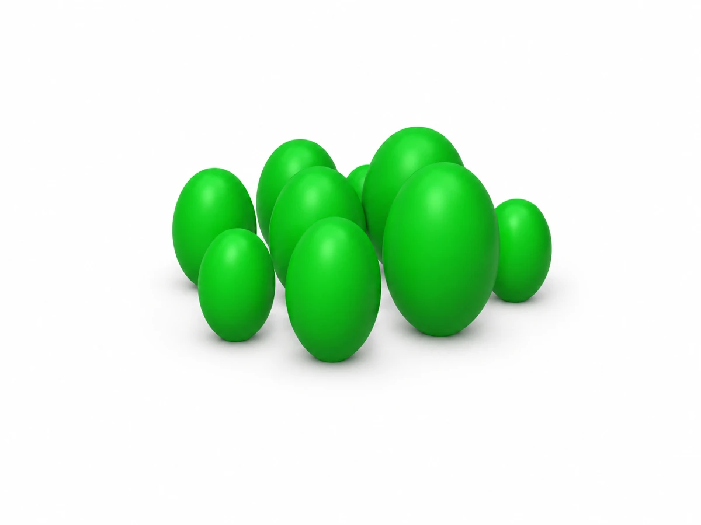

← Toutes les réalisationsRendu illustratif à partir du modèle du projet. Présentation du projet
Santé
Orchidomètre.
Réaliser un outil de comparaison de volumes par impression 3D.

Fonction et usage
Orchidomètre fabriqué par impression 3D : un outil de comparaison de volumes destiné à l’évaluation du volume testiculaire.
Les détails de fabrication et les résultats d’essais ne sont pas publiés sur cette page.
Un projet similaire ?
J’ai un besoin similaire ↗Parlons de votre besoin.
Une question technique ou un projet à développer ?